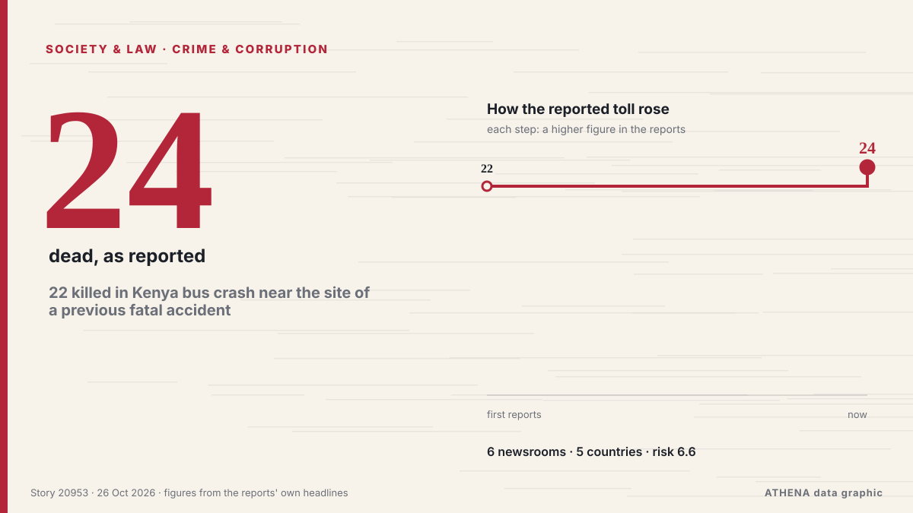

22 killed in Kenya bus crash near the site of a previous fatal accident

A bus has collided with a truck on Kenya's main highway, killing at least 22 people, police said. from ABC News (International)
Reported independently by 6 outlets in 5 countries since 22 Oct, first by KBC; coverage is at its peak. ATHENA rates the risk high (6.6/10), driven mainly by the severity of the harm described and its geographic and sector reach. Confidence is 78% (high), with 6 independent outlets corroborating it and an average source reliability of 79%.
Why it matters: Legal and policy changes alter rights, obligations and public services for the people they reach.
What changed: 5 new reports from 5 newsrooms in the 24 hours to 26 Oct.
At a glance
Selected, scored and written by ATHENA's published methodology. No editor intervenes in individual events. How this is produced ›
| 22 Oct 12:02 UTC | 1 |
|---|---|
| 22 Oct 18:02 UTC | 0 |
| 23 Oct 00:02 UTC | 0 |
| 23 Oct 06:02 UTC | 0 |
| 23 Oct 12:02 UTC | 0 |
| 23 Oct 18:02 UTC | 0 |
| 24 Oct 00:02 UTC | 0 |
| 24 Oct 06:02 UTC | 0 |
| 24 Oct 12:02 UTC | 0 |
| 24 Oct 18:02 UTC | 0 |
| 25 Oct 00:02 UTC | 0 |
| 25 Oct 06:02 UTC | 3 |
| 25 Oct 12:02 UTC | 0 |
| 25 Oct 18:02 UTC | 0 |
| 26 Oct 00:02 UTC | 0 |
| 26 Oct 06:02 UTC | 2 |
| 22 Oct 12:13 UTC | 4.8 |
|---|---|
| 25 Oct 09:28 UTC | 5.5 |
| 25 Oct 09:48 UTC | 6.4 |
| 26 Oct 09:13 UTC | 6.6 |
Why these numbers
Importance
Risk
Confidence
The reporting — who reported it, and when
headline as published · opens the original- KBC · KenyaBus driver charged over fatal Awasi crash that killed two TUM students
- Asharq Al-Awsat (English) · Saudi Arabia22 Killed in Kenya Bus Crash Near the Site of a Previous Fatal Accident
- Sky News (World) · United KingdomBus and lorry collide killing 22, including passengers returning from funeral
- ABC News (International) · United States22 killed in Kenya bus crash near the site of a previous fatal accident
- Africanews (English) · AFR'National emergency': 24 dead in Kenya bus crash near site of previous fatal accident
- The Hindu · IndiaOmni bus cleaner killed, over 40 passengers injured in accident on highway in Tiruchi district